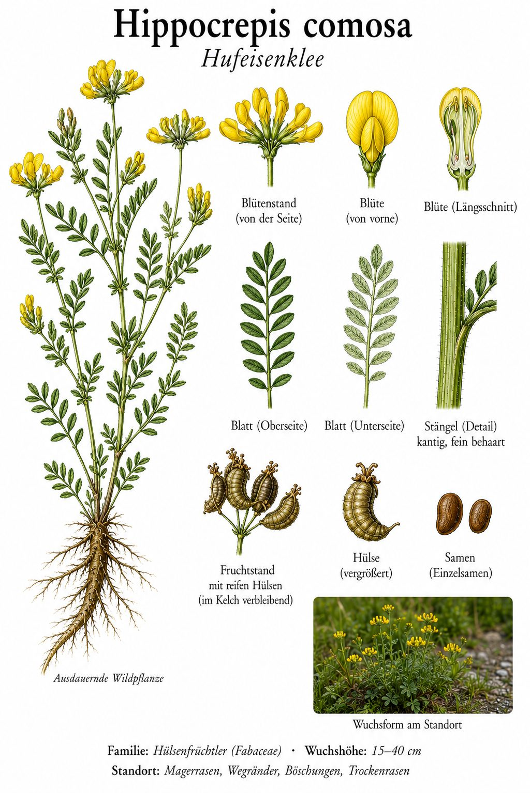
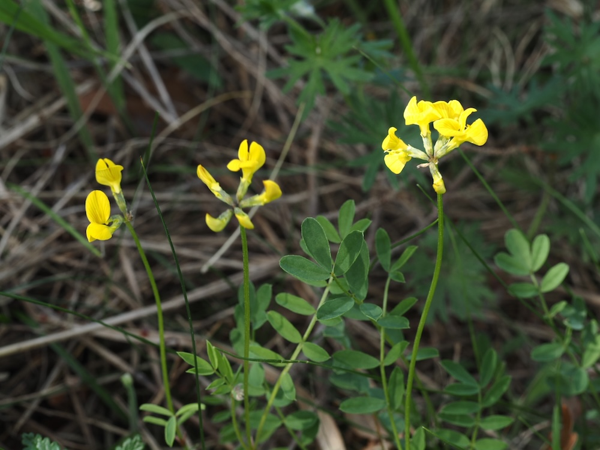
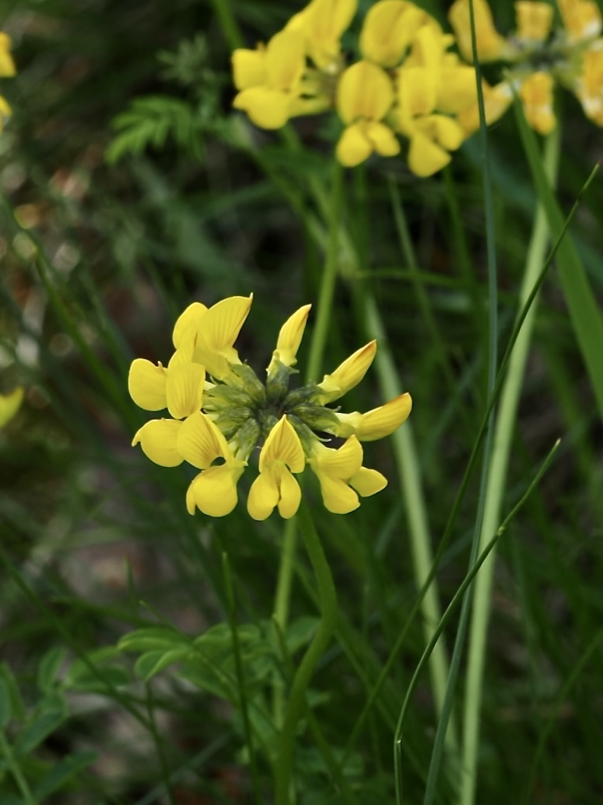
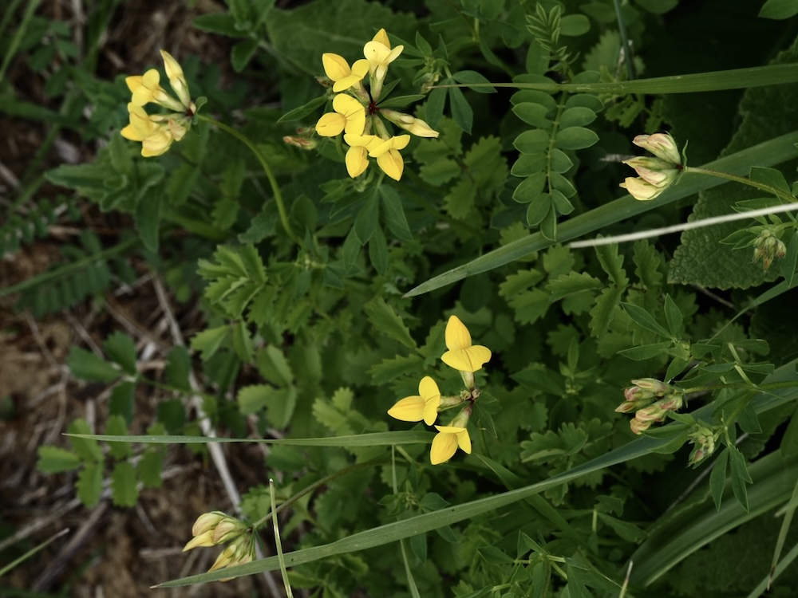

Goldgelbe Schmetterlingsblüten auf Magerrasen – mit Früchten wie kleinen Hufeisenketten.




Gelbe Kronen auf magerem Kalk
Der Hufeisenklee schmückt ab Mai trockene, kalkreiche Magerrasen mit leuchtend gelben Schmetterlingsblüten. Sie sitzen zu mehreren in einer lockeren Dolde am Stielende – wie eine kleine gelbe Krone. Die ausdauernde Pflanze hat zierlich gefiederte Blätter und wächst gern an Böschungen, auf Trockenrasen und an sonnigen Wegrändern.
Hufeisen als Erkennungszeichen
Namensgebend sind die reifen Hülsen: Sie sind tief eingeschnürt und zerfallen in einzelne hufeisenförmige Glieder – ein unverwechselbares Merkmal. Als Schmetterlingsblütler lebt der Hufeisenklee mit Knöllchenbakterien in Symbiose und reichert den Boden mit Stickstoff an. Für die Raupen mehrerer Bläulinge ist er eine wichtige Futterpflanze.
Wissenswertes & Merksätze
Hufeisen in der Hülse
Die reife Frucht zerbricht in hufeisenförmige Glieder – ein Bild, das den Namen sofort erklärt.
Magerzeiger
Hufeisenklee zeigt magere, kalkreiche Böden an. Auf gedüngten Fettwiesen sucht man ihn vergebens.